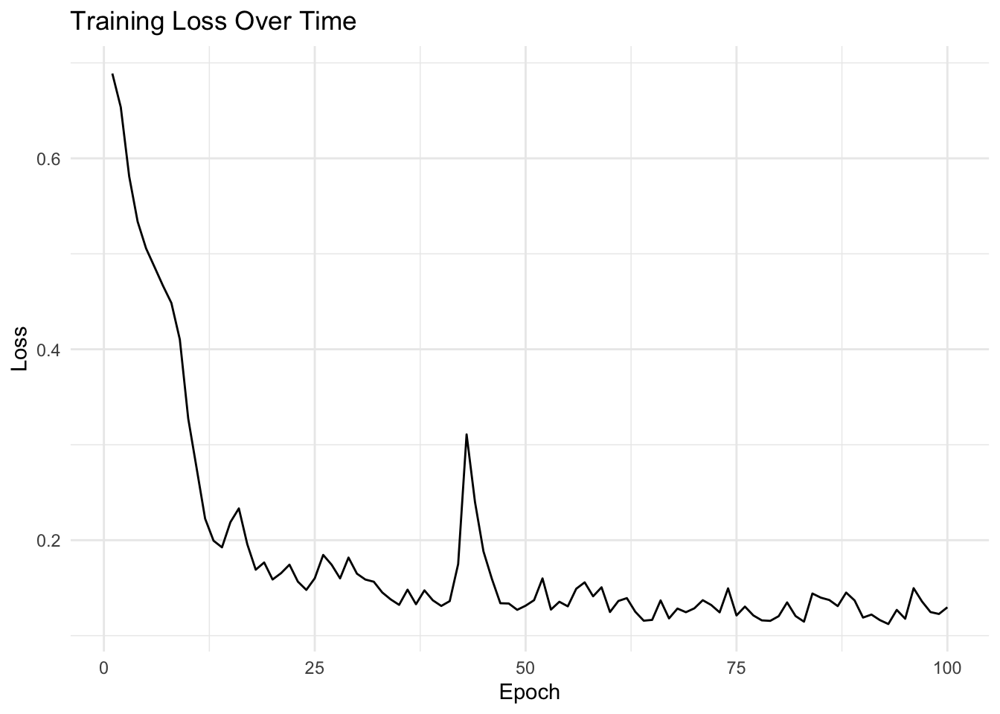
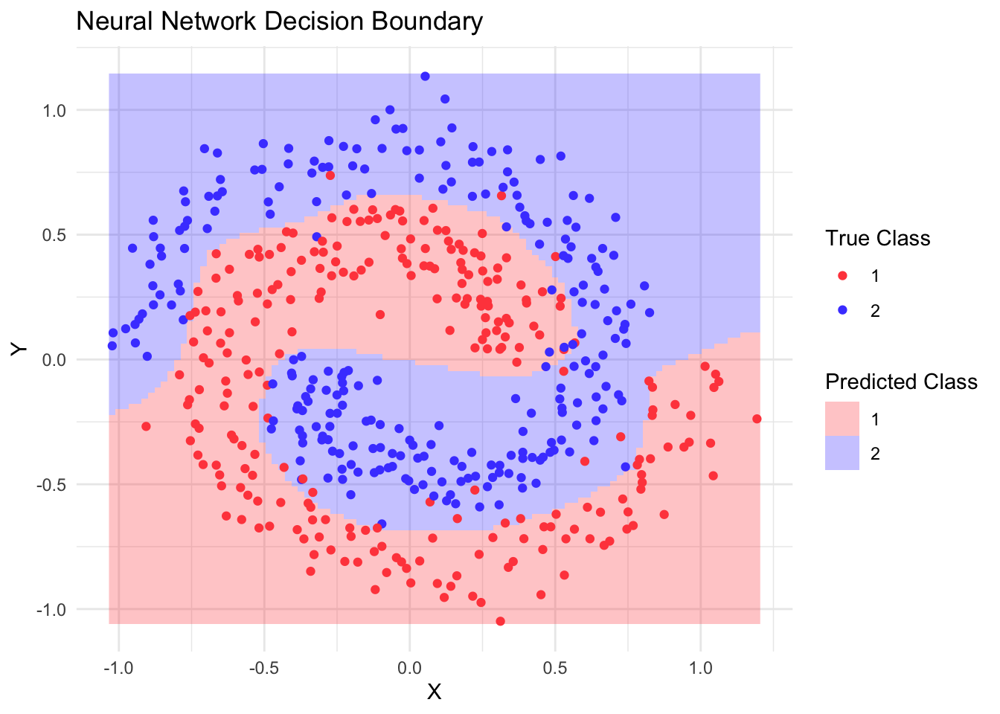

In the previous notebook, we learned how to use torch’s autograd system to fit a simple linear model of the form \(\hat{y} = ax + b\) using gradient descent. We manually:
Created parameters a and b with requires_grad = TRUE
Implemented forward pass using basic operations: y = a * x + b
Computed gradients and updated parameters with a simple update rule: a$sub_(lr * a$grad)
For more complex models, this approach becomes unwieldy. torch provides several high-level abstractions that make it easier to build and train neural networks:
nn_module: A class to organize model parameters and define the forward pass.
optim: Classes that implement various optimization algorithms (replaces our manual gradient updates)
dataset and dataloader: Classes to handle data loading and batching (replaces our manual data handling)
Let’s see how these components work together by building a neural network to classify spiral data.
We will start by introducing the nn_module class.
Neural Network Architecture with nn_module
The nn_module class serves several purposes: 1. Acts as a container for learnable parameters 2. Provides train/eval modes (important for layers like dropout and batch normalization) 3. Defines the forward pass of the model
Torch provides many common neural network modules out of the box. For example, the simple linear model we created earlier (\(\hat{y} = ax + b\)) could be implemented using the built-in nn_linear module:
library(torch)linear_model <-nn_linear(in_features =1, out_features =1, bias =TRUE)# The parameters 'weight' and 'bias' correspond to our 'a' and 'b'print(linear_model$parameters)
Note that we need to wrap the trainable tensors in nn_parameter(), otherwise they will not be included in the $parameters. Only those weights that are part of the networks parameters and for which $requires_grad is TRUE will later be adjusted by the optimizer.
Besides parameters, neural networks can also have buffers (nn_buffer). Buffers are tensors that are part of the model’s state but don’t receive gradients during backpropagation. They’re commonly used for: - Running statistics in batch normalization (mean/variance) - Pre-computed constants
Another important function of a network is the $state_dict(), which will return the network’s parameters and buffers.
The state dict can for example be used to save the weights of a network. Note that in general, you cannot simply save and load torch objects using saveRDS and readRDS:
Besides adding parameters and buffers to the network’s state dict by registering nn_parameters and nn_buffers in the module’s $initialize() method, you can also register other nn_modules.
Below, we showcast this by defining a neural network with two hidden layers and relu activation:
Instead of creating an nn_relu() during network initialization, we could instead also have used the nnf_relu function directly in the forward pass. This is possible for the activation functions as it has no trainable weights.
In torch in general, nn_ functions create module instances that can maintain state (like trainable weights or running statistics), while nnf_ functions provide the same operations as pure functions without any state.
Note that nn_spiral_net is not an nn_module itself, but an nn_module_generator. To create the nn_module, we call it and pass construction arguments to its $initialize() method:
# Create model instancemodel <-nn_spiral_net(input_size =2,hidden_size =64,output_size =2)# Print model architectureprint(model)
The model outputs logits (unnormalized probabilities) because when training a classification network with cross-entropy, using logits is more numerically stable. If we wanted to obtain class probabilities we would have to apply the softmax function:
torch provides several optimizers, with Adam being one of the most popular choices. The main optimizer API consists of:
zero_grad(): Reset gradients to zero before each backward pass
step(): Update parameters using current gradients
Available optimizers include: - SGD (optim_sgd): Basic stochastic gradient descent - Adam (optim_adam): Adaptive moment estimation, combines RMSprop and momentum - RMSprop (optim_rmsprop): Adapts learning rates based on moving average of squared gradients - Adagrad (optim_adagrad): Adapts learning rates based on parameter-specific history
# Create optimizeroptimizer <-optim_adam(model$parameters, lr =0.01)
Training Loop
Now we can put everything together:
# Training settingsn_epochs <-100device <-if(cuda_is_available()) "cuda"else"cpu"# Move model to devicemodel <- model$to(device = device)# Training looptrain_losses <-numeric(n_epochs)for(epoch in1:n_epochs) { model$train() # Set to training mode epoch_loss <-0 batch_count <-0 coro::loop(for(batch in train_loader) {# Move batch to device x <- batch$x$to(device = device) y <- batch$y$to(device = device)# Forward pass output <-model(x) loss <-nnf_cross_entropy(output, y)# Backward pass optimizer$zero_grad() loss$backward() optimizer$step()# Record loss epoch_loss <- epoch_loss + loss$item() batch_count <- batch_count +1 }) train_losses[epoch] <- epoch_loss / batch_count}# Plot training lossggplot(data.frame(epoch =1:n_epochs, loss = train_losses),aes(x = epoch, y = loss)) +geom_line() +theme_minimal() +labs(title ="Training Loss Over Time",x ="Epoch",y ="Loss")

# Visualize decision boundaryx_range <-seq(min(spiral_data$x), max(spiral_data$x), length.out =100)y_range <-seq(min(spiral_data$y), max(spiral_data$y), length.out =100)grid <-expand.grid(x = x_range, y = y_range)# Predict on gridmodel$eval() # Set to evaluation modewith_no_grad({ grid_tensor <-torch_tensor(as.matrix(grid))$to(device = device) predictions <-model(grid_tensor) probabilities <-nnf_softmax(predictions, dim =2) predicted_class <-torch_argmax(probabilities, dim =2)$cpu()})# Plot decision boundarygrid$prediction <-as.numeric(predicted_class)ggplot() +geom_raster(data = grid, aes(x = x, y = y, fill =factor(prediction)), alpha =0.3) +geom_point(data = spiral_data, aes(x = x, y = y, color = label)) +scale_fill_manual(values =c("#FF4B4B", "#4B4BFF")) +scale_color_manual(values =c("#FF4B4B", "#4B4BFF")) +theme_minimal() +labs(title ="Neural Network Decision Boundary",x ="X",y ="Y",fill ="Predicted Class",color ="True Class")

This example demonstrates how torch’s high-level components work together to build and train neural networks: - nn_module manages our parameters and network architecture - The optimizer handles parameter updates - Dataset/dataloader classes efficiently feed data to our model - The training loop brings it all together
The decision boundary plot shows how our neural network learned to separate the spiral classes, demonstrating its ability to learn non-linear patterns that would be impossible with a simple linear model.